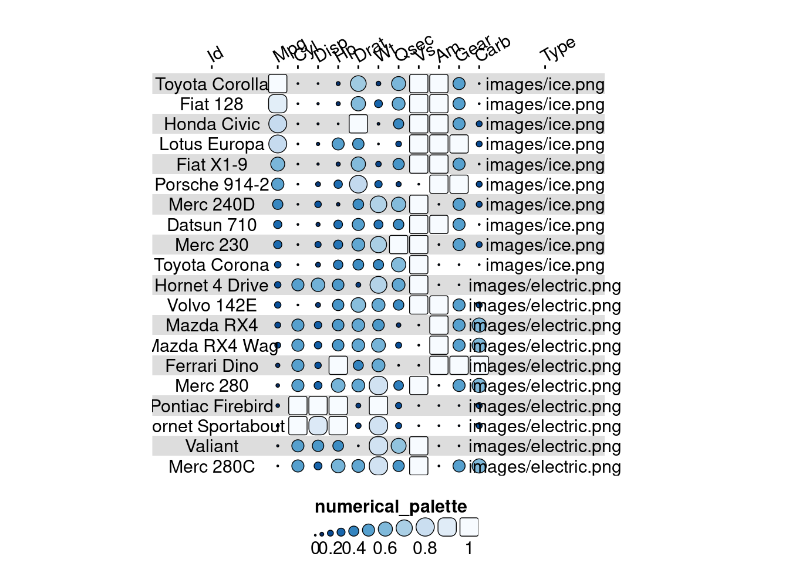

library(funkyheatmap)
library(dplyr, warn.conflicts = FALSE)
library(tibble, warn.conflicts = FALSE)
library(purrr, warn.conflicts = FALSE)
data("mtcars")
data <- mtcars %>%
rownames_to_column("id") %>%
arrange(desc(mpg)) %>%
head(20) %>%
mutate(type = c(rep("images/ice.png", 10), rep("images/electric.png", 10)))mtcars: A small demo
Load data
We can plot this data frame without any additional formatting, though it doesn’t look very nice:
funky_heatmap(data)ℹ No column info was provided, assuming all columns in `data` are to be plotted.ℹ Column info did not contain column `name`, using `id` to generate it.ℹ Column info did not contain information on which columns to plot, inferring from `data` types.ℹ Column info did not contain group information, assuming columns are ungrouped.ℹ Column info did not contain a column called 'palette', generating palettes based on the 'geom' column.ℹ Column info did not contain a column called 'width', generating options based on the 'geom' column.ℹ Column info did not contain a column called 'legend', generating options based on the 'geom' column.ℹ No row info was provided, assuming all rows in `data` are to be plotted.ℹ Row info did not contain group information, assuming rows are ungrouped.ℹ No palettes were provided, trying to automatically assign palettes.ℹ Palette named 'numerical_palette' was not defined. Assuming palette is numerical. Automatically selected palette 'Blues'.
By defining a few additional formatting parameters, we can get the plot to look much nicer.
Column info
column_info <- tribble(
~id, ~group, ~name, ~geom, ~palette, ~options,
"id", NA, "", "text", NA, list(hjust = 0, width = 6),
"mpg", "overall", "Miles / gallon", "bar", "palette1", list(width = 4, legend = FALSE),
"cyl", "overall", "Number of cylinders", "bar", "palette2", list(width = 4, legend = FALSE),
"disp", "group1", "Displacement (cu.in.)", "funkyrect", "palette1", lst(),
"hp", "group1", "Gross horsepower", "funkyrect", "palette1", lst(),
"drat", "group1", "Rear axle ratio", "funkyrect", "palette1", lst(),
"wt", "group1", "Weight (1000 lbs)", "funkyrect", "palette1", lst(),
"qsec", "group2", "1/4 mile time", "circle", "palette2", lst(),
"vs", "group2", "Engine", "circle", "palette2", lst(),
"am", "group2", "Transmission", "circle", "palette2", lst(),
"gear", "group2", "# Forward gears", "circle", "palette2", lst(),
"carb", "group2", "# Carburetors", "circle", "palette2", lst(),
"type", "group2", "Type of engine", "image", NA, lst()
)Define column groups
column_groups <- tribble( # tribble_start
~Category, ~group, ~palette,
"Overall", "overall", "overall",
"Group 1", "group1", "palette1",
"Group 2", "group2", "palette2"
) # tribble_endRow info
Determine method grouping
row_info <- data %>% transmute(id, group = "test")
row_groups <- tibble(Group = "Test", group = "test")Palettes
Determine palettes
palettes <- tribble(
~palette, ~colours,
"overall", grDevices::colorRampPalette(rev(RColorBrewer::brewer.pal(9, "Greys")[-1]))(101),
"palette1", grDevices::colorRampPalette(rev(RColorBrewer::brewer.pal(9, "Blues") %>% c("#011636")))(101),
"palette2", grDevices::colorRampPalette(rev(RColorBrewer::brewer.pal(9, "Reds")[-8:-9]))(101)
)Funky heatmap
Generate funky heatmap
g <- funky_heatmap(
data = data,
column_info = column_info,
column_groups = column_groups,
row_info = row_info,
row_groups = row_groups,
palettes = palettes,
expand = list(xmax = 4)
)Warning in funky_heatmap(data = data, column_info = column_info, column_groups
= column_groups, : Argument `expand` is deprecated. Use
`position_arguments(expand_* = ...)` instead.! Package `magick` is required to draw images. Skipping columns with geom == "image".g
funkyheatmap automatically recommends a width and height for the generated plot. To save your plot, run:
ggsave("path_to_plot.pdf", g, device = cairo_pdf, width = g$width, height = g$height)